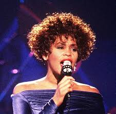
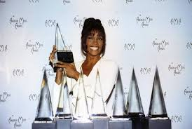

WHITNEY HOUSTON

Whitney Elizabeth Houston (August 9, 1963 – February 11, 2012) was an American singer and actress. She was certified as the most awarded female artist of all time by Guinness World Records and is one of the best-selling recording artists of all time, with sales of over 200 million records worldwide.
Born: 9 August 1963, Newark, New Jersey, United States
Died: 11 February 2012, Beverly Hills, California, United States
Spouse: Bobby Brown (m. 1992–2007)
ALBUMS:
Studio albums: 7
Live albums: 1
Soundtrack albums: 2
Compilation albums:6

AWARDS:
Grammy Award for Album of the Year
1994 ·
The Bodyguard: Original Soundtrack Album
Grammy Award for Record of the Year
1994 ·
I Will Always Love You
Billboard Music Award for Top Female Artist
1993
Grammy Award for Best Female Pop Vocal Performance
1994, 1988, 1986 ·
I Will Always Love You, I Wanna Dance with Somebody (Who Loves Me), Saving All My Love for You
Grammy Hall of Fame
2013
·
NAACP Image Award for Outstanding Actress in a Motion Picture
1997 ·
The Preacher's Wife
American Music Award for Favorite Album Soul/
1994, 1987 ·
The Bodyguard: Original Soundtrack Album, Whitney Houston
Juno Award for International Album of the Year
1994 ·
The Bodyguard: Original Soundtrack Album
American Music Award for Favorite Album Pop/Rock
1994, 1987
The Bodyguard: Original Soundtrack Album, Whitney Houston
Grammy Award for Best Female Vocal Performance
2000 ·
It's Not Right but It's Okay
NAACP Image Award for Outstanding Duo or Group
1999 ·
When You Believe
People's Choice Award for Favorite Music Video
1993 ·
I Will Always Love You
MTV Video Music Award for Best Female Video
1986 ·
How Will I Know
Billboard Music Award for Top Album
1991 ·
I'm Your Baby Tonight
American Music Award for Favorite Female Artist Pop/Rock
1994, 1989, 1988
Primetime Emmy Award for Individual Performance - Variety Or Music Program
1986 ·